CI/CD for an OpenVMS product
Put an OpenVMS product under a CI pipeline that builds, tests and releases it on VMS/XDE, with the same tools you can install at your own site.
1 · Introduction and setup
Your team maintains ZeroMQ, a messaging library ported to OpenVMS. It is built by hand with @build.com and handed around as a PCSI kit. In this task you put it under CI: every push to the git server builds and tests it on OpenVMS, and a version tag publishes the PCSI kit.
The pipeline grows by one stage per part:
Each part starts from a prepared state and ends with a checkpoint: the result you should see. If you fall behind, the Task B page in VS Code sets the starting state of any part. Claude Code (right pane) can explain a log or a command at any time; nothing in this task requires it.
This task uses Claude Code in the pane on the right, as in Getting started. The terminal alternative: Getting started, G5.
Set up
-
Open the Task B workspace: in the VMS/XDE Lab side bar, under Workspaces, click Task B: CI/CD pipeline. The window reloads with the task disk
DKC200.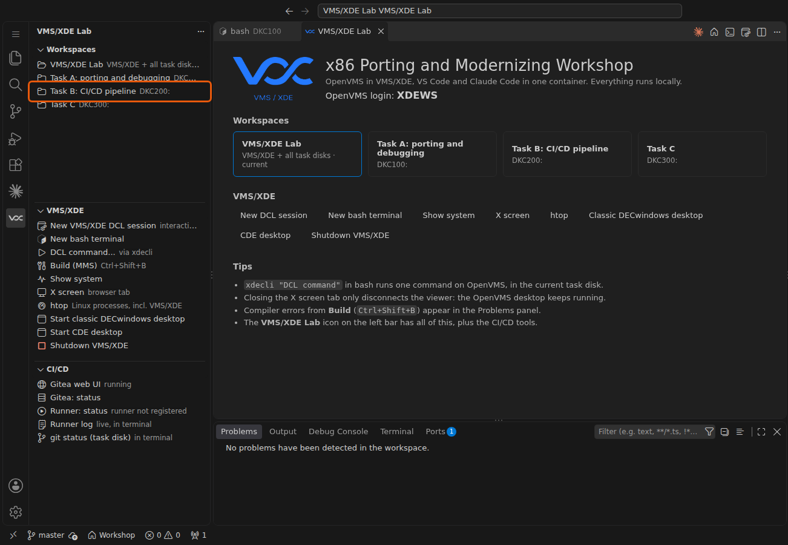
-
OPTIONALLook at the CI/CD view in the side bar. Gitea shows running; the runner shows not registered — you register it in part B1.
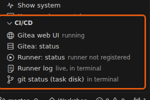
At the top of the side bar, the Task B view summarises the task. Open guide opens this guide; per part, Hint jumps to its section and Set stage puts that part's starting state in place if you need to catch up: the task disk, the Gitea repository and the runner as at the end of the part before. Your own changes in the task are replaced; VMS/XDE keeps running. The repository is new then, so its pipeline runs are numbered from 1 again: where this guide names a run number (
runs view … 3,[ci.run_6]), use the number thattea actions runs list --repo xdews/zeromqshows.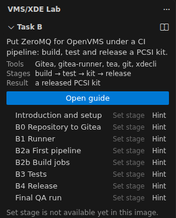
-
Open a terminal: in the VMS/XDE view click New bash terminal. It opens as an editor tab in the task disk,
/opt/xde/vms_os/V9.2/DKC200. All commands in this guide are typed there unless a step says otherwise. You can keep using the same terminal tab for the following steps, or close it and open a new one the same way at any time; a new terminal starts in the task disk again, so the steps that need another folder begin with their owncd.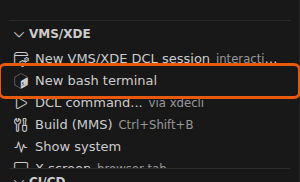
-
Connect
teato your Gitea server.teais Gitea's command-line client: it creates repositories, secrets and releases and shows pipeline runs, so you can do everything from the terminal. This command logs in once and stores an access token for later commands.tea login add --name lab --url http://127.0.0.1:3330 --user xdews --password lab tea login default lab
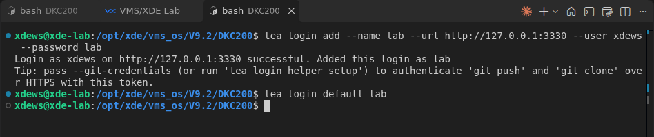
Expected output: Login as xdews on http://127.0.0.1:3330 successful. -
Tell git who you are. Every commit records an author; without a name and e-mail
git commitrefuses with Author identity unknown. The values are only labels for this workshop.git config --global user.name "Workshop Participant" git config --global user.email "participant@workshop.invalid"
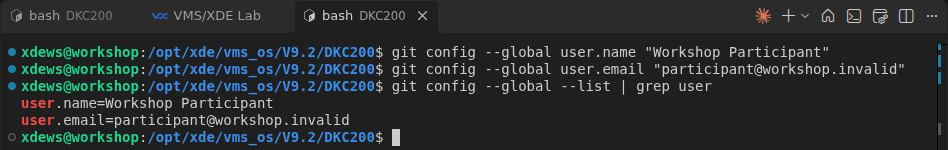
-
Open the Gitea web pages: in the CI/CD view click Gitea web UI. Gitea opens in a new browser tab. Keep it open: you look at pipeline runs and releases there.
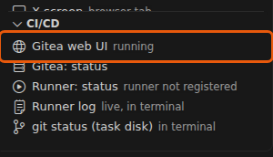
-
Sign in to Gitea with user
xdewsand passwordlab— the same as for VS Code.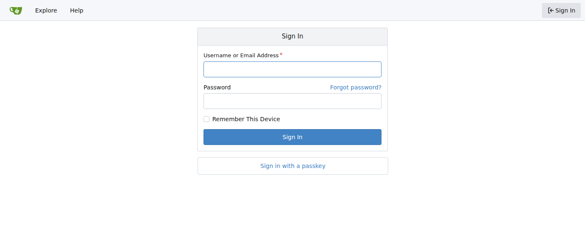
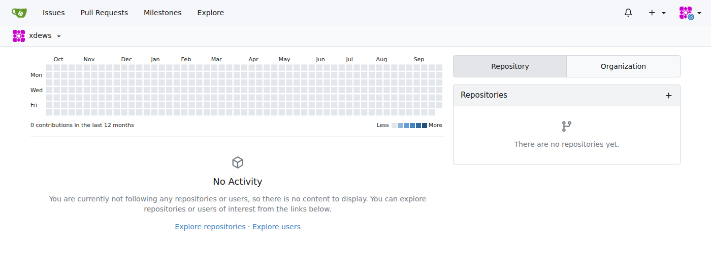
After sign-in: no repositories yet.
DKC200, tea is logged in, git knows your name, and Gitea is open in a browser tab.B0 · Move the repository to Gitea
The team's repository exists only on this machine. You create an empty repository on the Gitea server and push the existing history there.
-
OPTIONALLook at the local repository.
git loglists its commits;git status --short | wc -lcounts uncommitted changes.cd zeromq git log --oneline; git status --short | wc -l
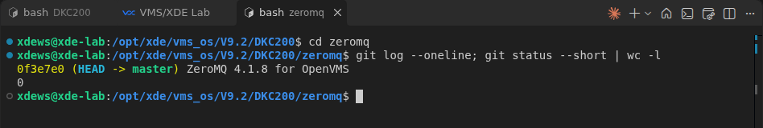
One commit on master, no uncommitted changes. The same files areDKC200:[zeromq]in OpenVMS. -
Create an empty repository
zeromqon the Gitea server. New repositories have pipelines (Gitea Actions) switched on already.tea repos create --name zeromq
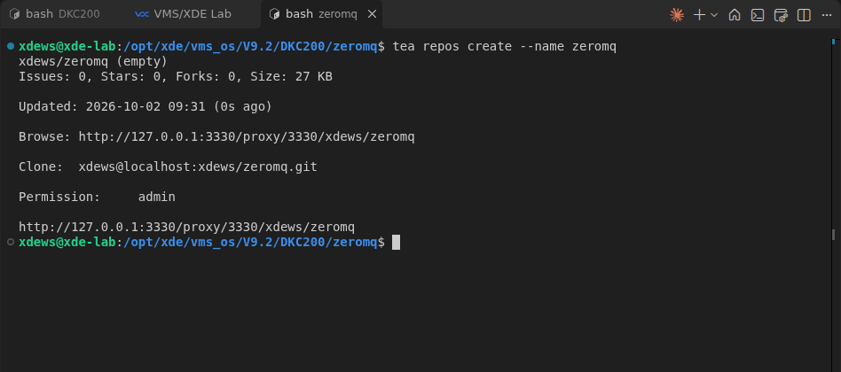
xdews/zeromq (empty). The addresses printed with/proxy/3330/are Gitea's internal ones; open the repository from the Gitea tab. -
Connect the local repository to the server and push it.
git remote addrecords the server address under the nameorigin;git push -uuploads the history and links yourmasterbranch to the server's.git remote add origin http://localhost:8080/proxy/3330/xdews/zeromq.git git push -u origin master
VS Code asks for the Gitea login in a box at the top of the window. Type
xdewsand press Enter, then the passwordlaband Enter. git remembers the login: later pushes do not ask again.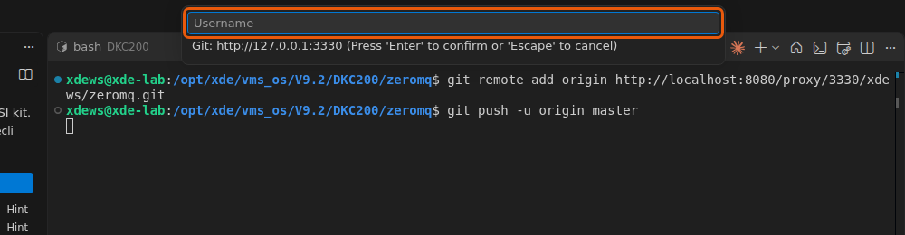
First the username… 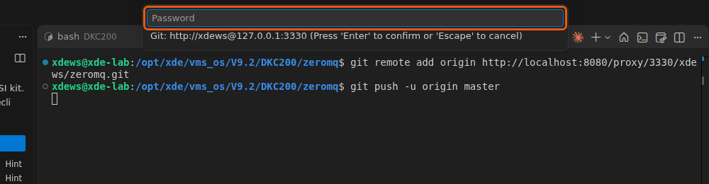
…then the password. 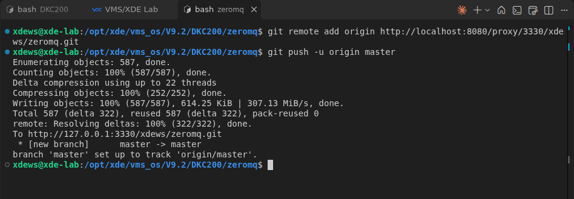
Expected output ends with branch 'master' set up to track 'origin/master'. -
OPTIONALIn the Gitea tab, reload the page and open xdews / zeromq: the files and the commit are on the server.
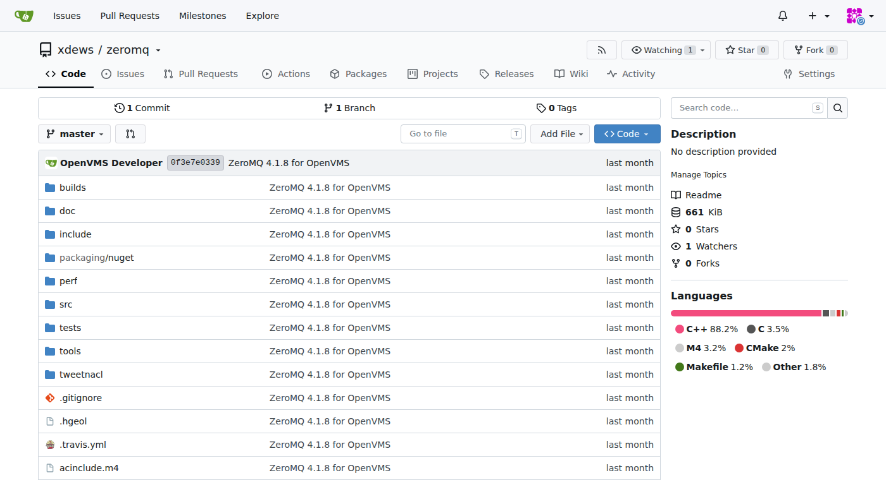
localhost:8080/proxy/3330/). Inside the container git is set up to send that address straight to Gitea, so the clone link from the Gitea page works in the terminal.xdews/zeromq is on Gitea with the commit ZeroMQ 4.1.8 for OpenVMS, and git push reported master -> master.B1 · Connect VMS/XDE as a CI runner
Gitea stores pipelines but does not run them. A runner fetches the jobs and executes them. Here the runner is gitea-runner in your container, so its jobs can call OpenVMS through xdecli.
-
Write the runner's configuration. It tells
gitea-runnerwhich jobs it takes, how many at once, and where job folders go. Open the Explorer (top icon of the activity bar), right-click the folder Runner (/data/runner), choose New File…, name itconfig.yaml, paste the content below, and save with Ctrl+S.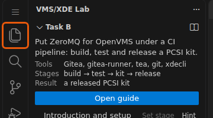
1 · Explorer 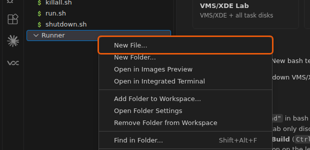
2 · right-click Runner → New File… 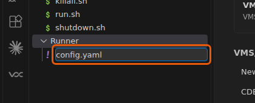
3 · name, Enter runner: file: .runner # registration, written by "gitea-runner register" capacity: 1 # one job at a time labels: - "xde:host" # jobs with "runs-on: xde" run here, directly in the container cache: enabled: false host: workdir_parent: /opt/xde/vms_os/V9.2/DKC200/ci # job folders on the DKC disk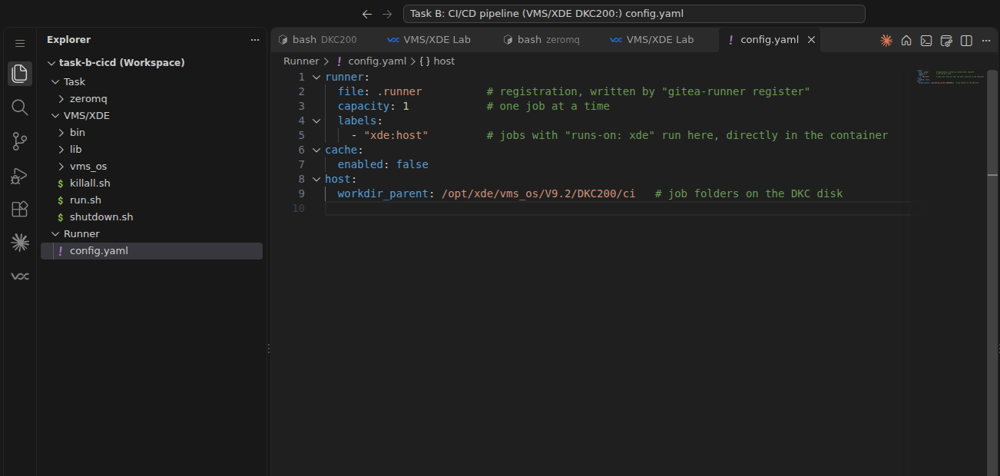
4 · paste, Ctrl+S. Setting Why labels: xde:hostA job with runs-on: xderuns on this runner, directly in the container (host), not in a Docker image.capacity: 1One job at a time. VMS/XDE runs at most 30 OpenVMS processes in total, and jobs share the task disk. workdir_parentThe key setting: job folders are created on the task disk, so OpenVMS sees them as DKC200:[ci...]. A folder outside a DKC disk is invisible to OpenVMS.For all options and their defaults,
gitea-runner config generateprints a complete annotated file — the usual starting point at your own site. -
Back in a bash terminal (VMS/XDE Lab icon → New bash terminal), get a registration token for the repository. how: Setup step 3 A runner needs it once, to identify itself to Gitea. The command stores the token in the shell variable
TOKEN;jqextracts it from Gitea's JSON answer, so you don't have to copy it by hand.TOKEN=$(tea api -X POST /repos/xdews/zeromq/actions/runners/registration-token | jq -r .token) echo $TOKEN
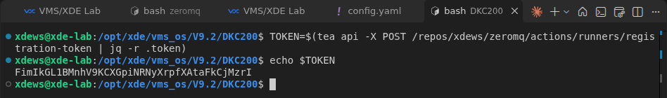
echoprints the token: about 40 letters and digits. -
Register the runner with Gitea, from the runner's folder.
--instanceis Gitea's address inside the container;--nameis how the runner appears in Gitea. The label comes fromconfig.yaml.cd /data/runner gitea-runner register --config config.yaml --instance http://127.0.0.1:3330 --token "$TOKEN" --name xde --no-interactive
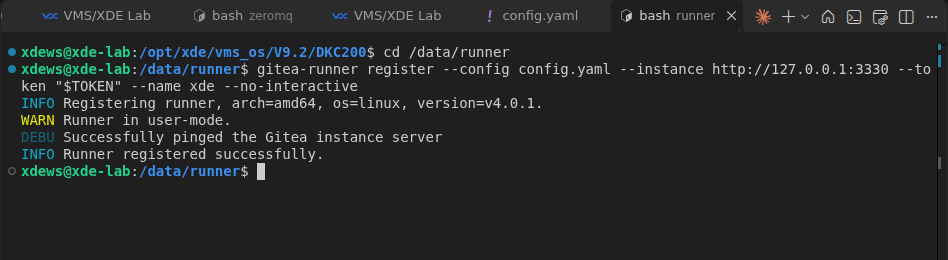
Expected: Runner registered successfully. The warning Runner in user-mode means it runs as your normal user, which is intended. -
Start the runner in the background.
nohup … &keeps it running after the command returns and writes its messages torunner.log. On a real server this would be a systemd service; the commands are the same.nohup gitea-runner daemon --config config.yaml >runner.log 2>&1 &
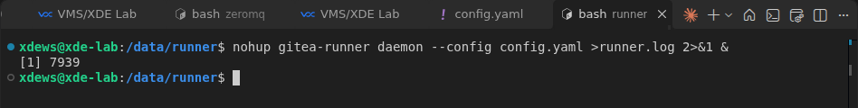
-
OPTIONALWatch the runner's log: open a second terminal (VMS/XDE → New bash terminal) and follow the log there. how: Setup step 3 Keep this tab: in the next parts it shows each job the runner takes. Closing the tab stops only the viewer, not the runner.
tail -f /data/runner/runner.log
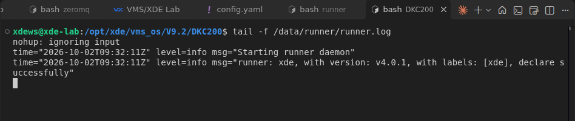
Expected: runner: xde … declare successfully. -
OPTIONALCheck the result. In VS Code the CI/CD view now shows runner running. In the Gitea tab, open the repository's Settings → Actions → Runners: the runner
xdeis Idle, waiting for jobs.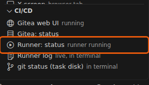
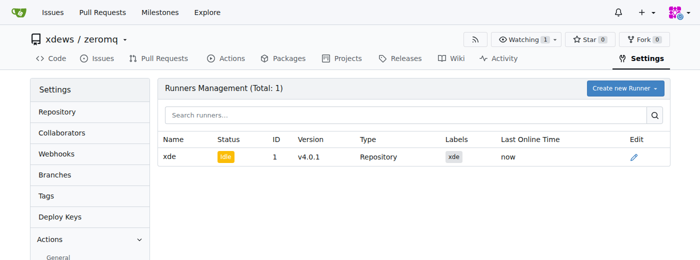
B2a · First pipeline
You add the pipeline file to the repository. From now on every push builds ZeroMQ on OpenVMS, and the pipeline reports whether OpenVMS really succeeded.
-
Create the pipeline file. Gitea reads pipelines from
.gitea/workflows/in the repository. In the Explorer, expand Task, right-click zeromq, choose New File…, type.gitea/workflows/ci.yaml(the folders are created with it), press Enter, paste and save. how: B1 step 1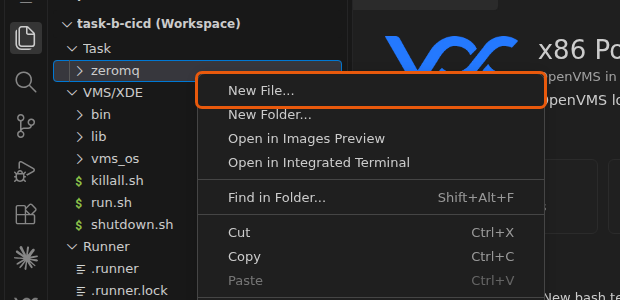
right-click zeromq → New File… 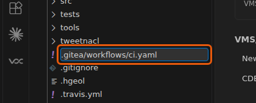
path, Enter name: ci on: push: workflow_dispatch: env: # our own run directory on the task disk (OpenVMS: DKC200:[ci.run_<n>]) RUN_DIR: /opt/xde/vms_os/V9.2/DKC200/ci/run_${{ gitea.run_number }} jobs: build: runs-on: xde steps: - name: checkout run: | rm -rf "$RUN_DIR" git clone --quiet http://127.0.0.1:3330/${{ gitea.repository }}.git "$RUN_DIR" git -C "$RUN_DIR" checkout --quiet ${{ gitea.sha }} - name: build run: | cd "$RUN_DIR" xdecli "@[.ci]run.com @build.com" | tee step.log grep -q 'CI-RESULT=OK' step.logPart What it does on: push, workflow_dispatchRun on every push, and on demand (used in the final QA run). env: RUN_DIROur own run folder on the task disk, DKC200:[ci.run_<n>]. The runner deletes its own job folder after each job; this one stays, so later jobs can share it.runs-on: xdeRun on the runner you registered in B1. checkoutPlain git cloneof exactly the pushed commit — no ready-made "actions": they would be downloaded from GitHub.buildxdecliruns one DCL command on OpenVMS; its default directory is the current Linux directory, the run folder. The command runs the product's own@build.comthrough the wrapper below.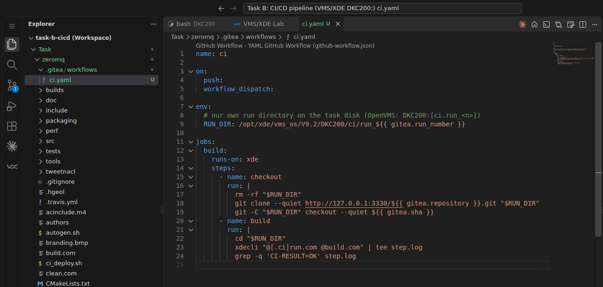
-
Create the DCL wrapper
ci/run.comthe same way (right-click zeromq → New File… →ci/run.com). It is needed becausexdeclialways returns Unix status 0, whatever OpenVMS reports — a failed build would still look green. The wrapper runs the command, reads OpenVMS's own result$STATUS, and prints one line the pipeline step checks:$! [.ci]run.com - run one CI step on OpenVMS and report its real result $! usage: @[.ci]run.com @build.com SRC 32 (P1 = command, P2.. = its parameters) $ set noon ! go on after an error: we report it $ 'p1' 'p2' 'p3' 'p4' 'p5' 'p6' 'p7' $ status = $status ! text, e.g. "%X00030001" $ severity = f$integer(status) .and. 7 ! 0 warning, 1 success, 2 error, 3 info, 4 fatal $ result = "FAIL" $ if severity .eq. 0 .or. severity .eq. 1 .or. severity .eq. 3 then result = "OK" $ write sys$output "CI-STATUS=''status' CI-RESULT=''result'" $ exit 'status'
Line Why set noonDCL stops a procedure at the first error by default; the wrapper must go on to report it. 'p1' 'p2' …Runs the command given as parameters, e.g. @build.com.status = $statusOpenVMS's result, a text like %X00030001.f$integer(status) .and. 7The severity: 0 warning, 1 success, 2 error, 3 information, 4 fatal. Warnings count as OK, as in the product's own build. CI-STATUS=… CI-RESULT=OK|FAILThe line the step looks for with grep -q 'CI-RESULT=OK'.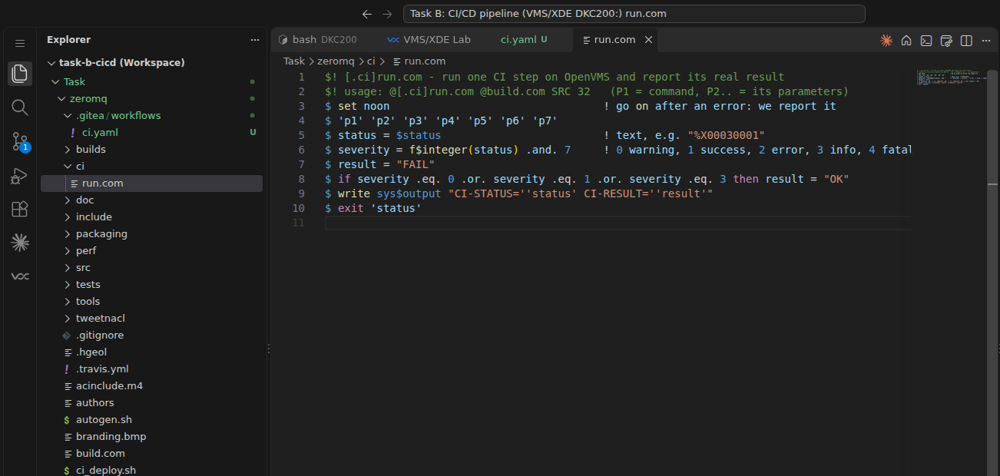
-
Commit and push.
git addselects the two new files,git commitrecords them,git pushsends them to Gitea — which starts the pipeline.cd /opt/xde/vms_os/V9.2/DKC200/zeromq git add .gitea ci git commit -m "Add first CI pipeline" git push
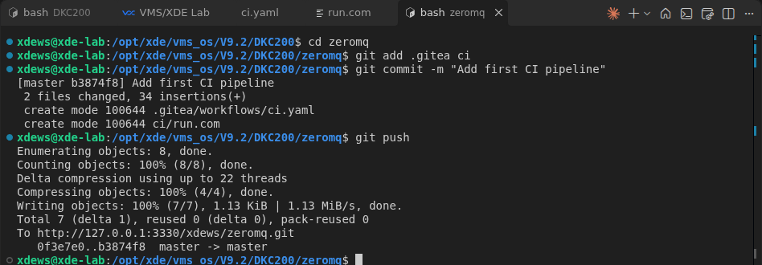
-
Watch the run.
tea actions runs listshows the runs of the repository (--reponames it, because the local repository's address is the browser one, whichteadoes not match to its login); the runner's log tab from B1 shows it taking the job. The full build takes about 2 minutes.tea actions runs list --repo xdews/zeromq
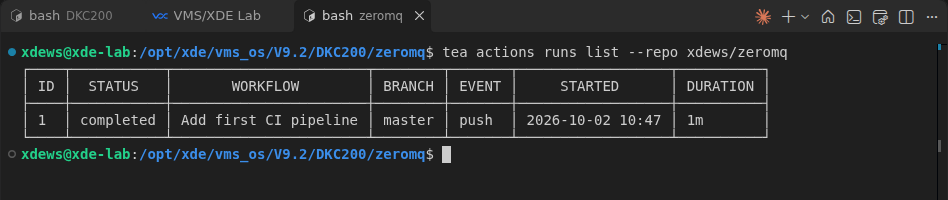
While the pipeline runs, STATUS shows running; afterwards completed. When it has finished, show its result and jobs (
runs listshows only whether a run is finished,runs viewshows whether it succeeded):tea actions runs view --repo xdews/zeromq 1
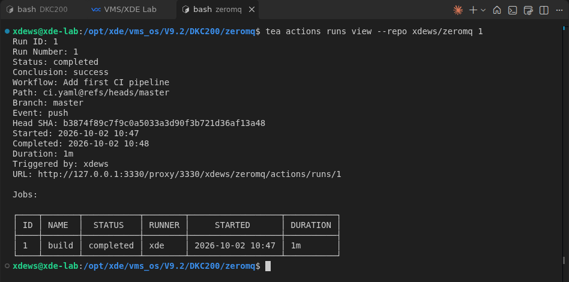
-
Look at the run in the Gitea tab: repository → Actions lists the runs; click the run to see its Summary with the pipeline graph — one box per job. how: Setup step 6 It grows with each part.
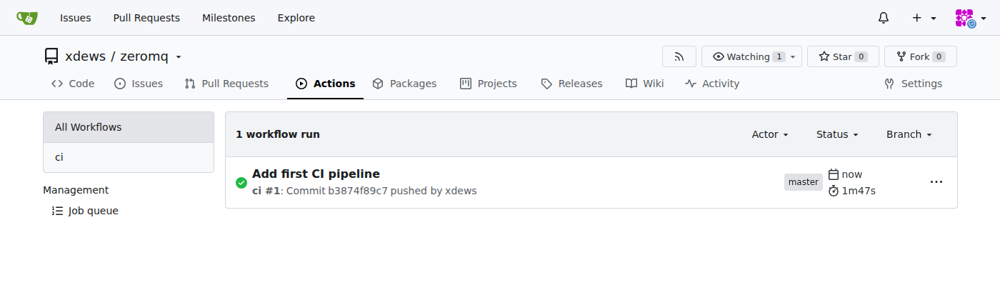
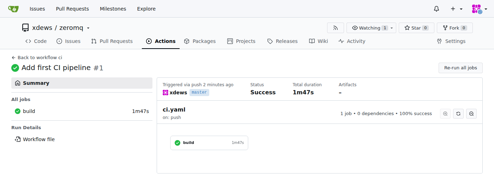
Pipeline graph: build.
tea actions runs view shows run 1 with Conclusion: success, and the graph shows the green job build.B2b · Build jobs
You split the one build job into jobs, one per build stage. The pipeline graph then shows which stage failed, and the slow stages run only when they are needed.
The product's build.com already takes the stage as a parameter (prepared for this task), so each job runs one stage:
| DCL command | Builds |
|---|---|
@build.com SRC 32 | the libraries and shareable images, 32-bit pointers |
@build.com SRC 64 | the same, 64-bit pointers |
@build.com TOOLS | the tool curve_keygen (links against the 32-bit build) |
@build.com KIT | the PCSI kit (needs both SRC builds) |
-
Open the pipeline file: in the Explorer, expand Task → zeromq → .gitea/workflows and click ci.yaml. Replace its whole content (Ctrl+A, paste) with the version below and save with Ctrl+S. how: B1 step 1
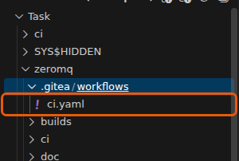
name: ci on: push: workflow_dispatch: env: # our own run directory on the task disk (OpenVMS: DKC200:[ci.run_<n>]), shared by all jobs RUN_DIR: /opt/xde/vms_os/V9.2/DKC200/ci/run_${{ gitea.run_number }} jobs: checkout: runs-on: xde steps: - name: clone run: | rm -rf "$RUN_DIR" git clone --quiet http://127.0.0.1:3330/${{ gitea.repository }}.git "$RUN_DIR" git -C "$RUN_DIR" checkout --quiet ${{ gitea.sha }} compile-32: needs: checkout runs-on: xde steps: - name: build.com SRC 32 run: | cd "$RUN_DIR" xdecli "@[.ci]run.com @build.com SRC 32" | tee compile-32.log grep -q 'CI-RESULT=OK' compile-32.log # full build (64-bit, kit) only for tags and manual runs; pushes stay fast compile-64: needs: checkout if: startsWith(gitea.ref, 'refs/tags/') || gitea.event_name == 'workflow_dispatch' runs-on: xde steps: - name: build.com SRC 64 run: | cd "$RUN_DIR" xdecli "@[.ci]run.com @build.com SRC 64" | tee compile-64.log grep -q 'CI-RESULT=OK' compile-64.log tools: needs: compile-32 runs-on: xde steps: - name: build.com TOOLS run: | cd "$RUN_DIR" xdecli "@[.ci]run.com @build.com TOOLS" | tee tools.log grep -q 'CI-RESULT=OK' tools.log kit: needs: [compile-64, tools] if: startsWith(gitea.ref, 'refs/tags/') || gitea.event_name == 'workflow_dispatch' runs-on: xde steps: - name: build.com KIT run: | cd "$RUN_DIR" xdecli "@[.ci]run.com @build.com KIT" | tee kit.log grep -q 'CI-RESULT=OK' kit.logPart What it does jobs: checkout, compile-32, …One job per stage. Each job is a box in the pipeline graph and has its own log. needs:The jobs a job waits for. toolslinks against the 32-bit build, so it waits forcompile-32;kitwaits for both builds. A job whoseneedsfailed does not run.if:The 64-bit build and the kit run only for tags ( refs/tags/…) and manual runs (workflow_dispatch). A push builds and checks the 32-bit code only, and gets its answer sooner.RUN_DIRin every jobAll jobs work in the same run folder on the task disk: checkoutclones once, the later jobs build in it. This works because all jobs run on the same runner, on the same OpenVMS disk.tee compile-32.logEach stage's output stays in the run folder under its own name, next to the build results. 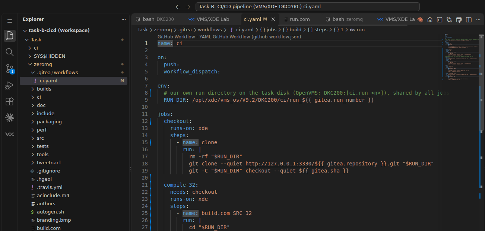
-
Commit and push.
git commit -arecords all changed files that git already knows, hereci.yaml, so nogit addis needed.cd /opt/xde/vms_os/V9.2/DKC200/zeromq git commit -am "Split the build into jobs" git push
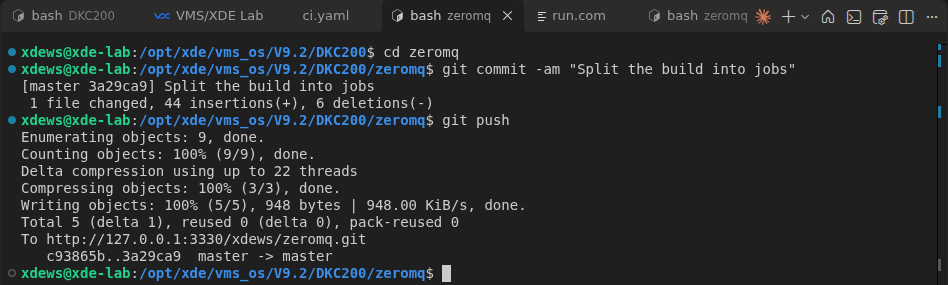
-
When the run has finished (about a minute;
tea actions runs list --repo xdews/zeromqshows completed), show its jobs:tea actions runs view --repo xdews/zeromq 2
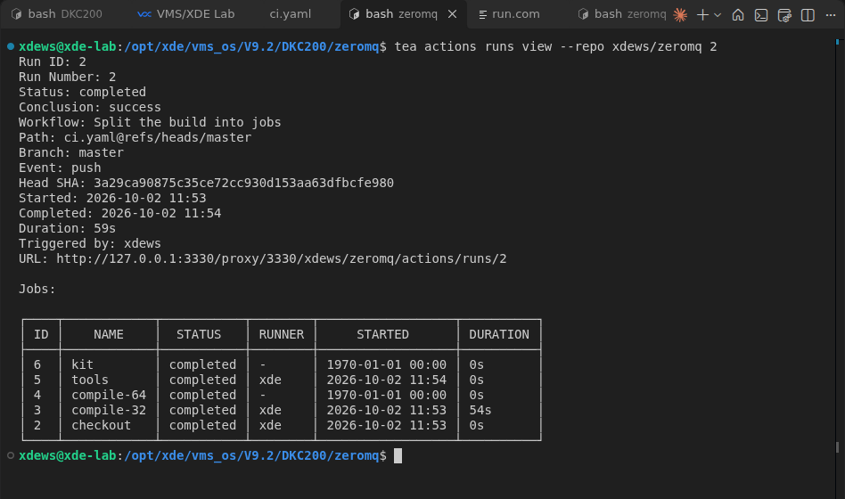
On a push, compile-64andkitare skipped (theirif:is false):tealists them as completed but with no runner (-) and start time 1970-01-01: they never started.toolstakes under a second: one C++ file. -
In the Gitea tab, open the run (Actions → the run). how: B2a step 5 The graph now shows the jobs and the
needslines between them. Click a job, for example compile-32, to see its log; it ends with the wrapper'sCI-RESULT=OKline.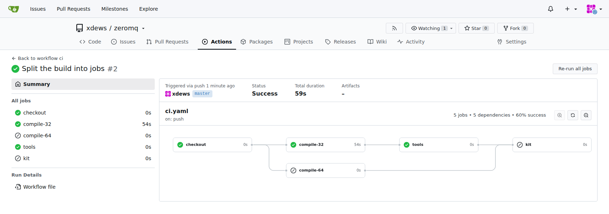
Pipeline graph: checkout → compile-32 → toolsgreen;compile-64andkitskipped (crossed circle).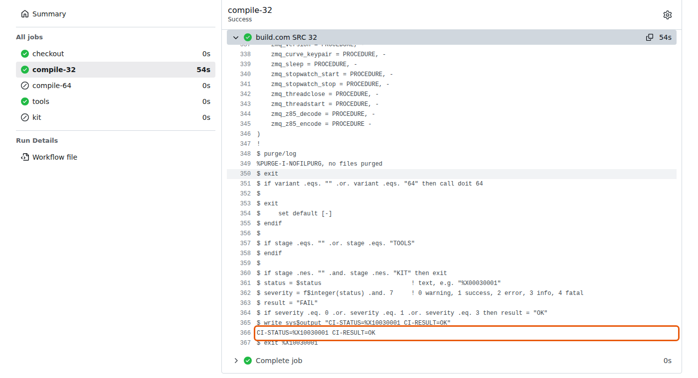
The end of the compile-32log: the wrapper's line.
checkout, compile-32 and tools are green, compile-64 and kit skipped.B3 · Tests
You add a test job: after the build, the pipeline builds and runs ZeroMQ's own tests on OpenVMS. A push is green only if the code builds and the tests pass.
-
OPTIONALLook at the prepared test scripts in
zeromq/tests. You do not change them; the job only calls them, so you can skip to the next step. The folder holds about a hundred files, so open the test list with Quick Open: click into the VS Code window first (for example on the Explorer), so that the keys go to VS Code and not to the browser, which would open its Print dialog; then press Ctrl+P, typevms_tests.txtand choose the one inzeromq/tests(the others are copies in earlier run folders). The Explorer scrolls to the file; the two.comscripts are in the same folder.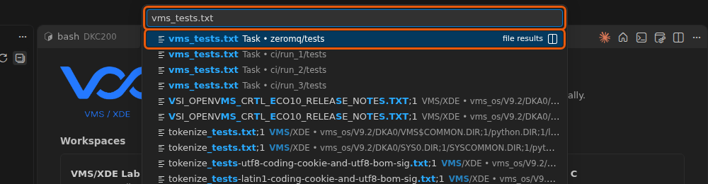
Ctrl+P → vms_tests.txt→ EnterFile What it does vms_tests.txtThe tests to run, one name per line; !starts a comment. It lists the tests that work on OpenVMS and do not need fixed TCP ports.build_tests.comCompiles and links each listed test against the 32-bit library [-.src]libzmq32.olb; printsN tests built.run_tests.comRuns each test, prints PASS nameorFAIL nameand the summaryN passed, M failed; each test's own output goes toname.log. It exits with an error status if any test failed, sorun.comreportsCI-RESULT=FAIL.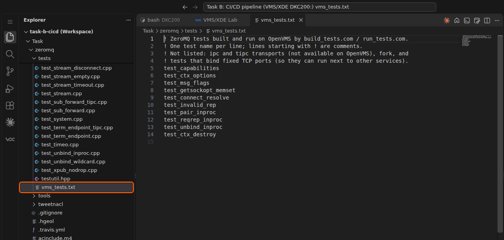
-
Add the test job: open
.gitea/workflows/ci.yamlas in B2b, how: B2b step 1 go to the end of the file (Ctrl+End), paste the block below and save. Keep its two-space indent:test:belongs underjobs:, likekit:above it.test: needs: tools runs-on: xde steps: - name: build tests run: | cd "$RUN_DIR" xdecli "@[.ci]run.com @[.tests]build_tests.com" | tee build-tests.log grep -q 'CI-RESULT=OK' build-tests.log - name: run tests run: | cd "$RUN_DIR" xdecli "@[.ci]run.com @[.tests]run_tests.com" | tee run-tests.log grep -q 'CI-RESULT=OK' run-tests.logPart What it does needs: toolsThe tests run after the whole 32-bit build. They run on every push, unlike the 64-bit build and the kit. two stepsBuilding and running the tests are separate steps, so the log shows which of them failed. A step runs only if the steps before it succeeded. @[.ci]run.com @[.tests]…The same wrapper as for the build: the test scripts' OpenVMS status becomes the step's result. 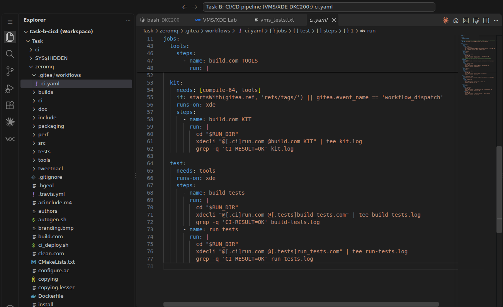
-
Commit and push:
cd /opt/xde/vms_os/V9.2/DKC200/zeromq git commit -am "Add the test job" git push
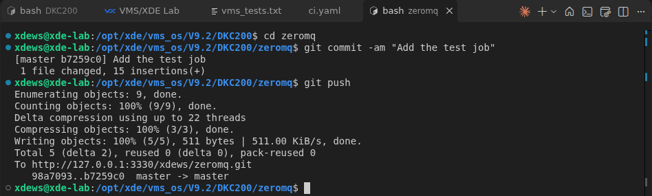
-
When the run has finished (a little over a minute: the tests build in about 10 seconds and run in about one), show its jobs:
tea actions runs view --repo xdews/zeromq 3
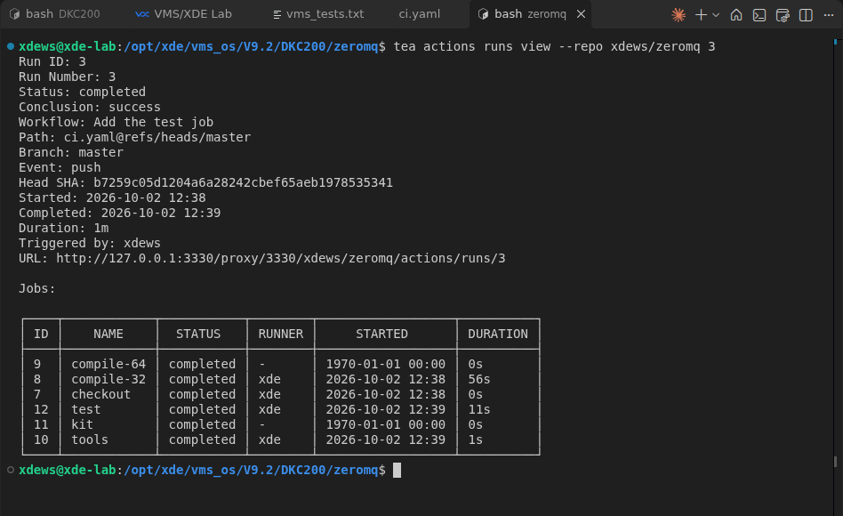
-
In the Gitea tab, open the run: the graph has the new box
testaftertools. how: B2a step 5 Click test and the step run tests: onePASSline per test and the summary at the end.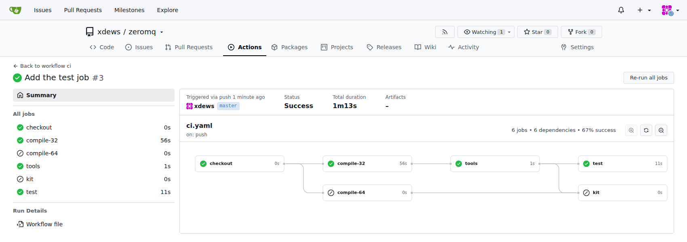
Pipeline graph: checkout → compile-32 → tools → test.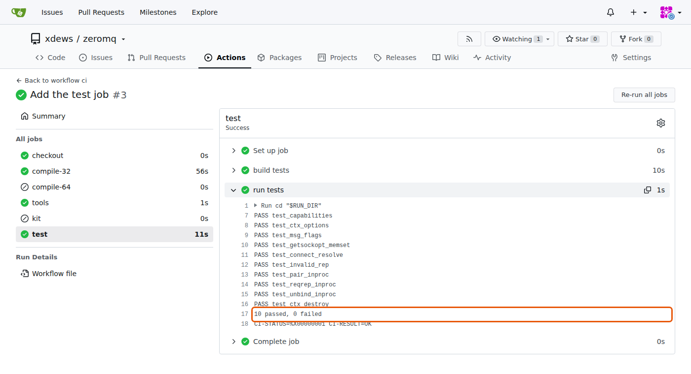
The test log: 10 passed, 0 failed.
test ends with 10 passed, 0 failed.B4 · Release
You add a release job. When you push a version tag, the pipeline runs every job, including the 64-bit build and the PCSI kit, and publishes the kit as a Gitea release. A push without a tag works as before.
-
Give the release job a token. Creating a release needs a Gitea login, and a pipeline must not contain a password. So you create an access token and store it as a repository secret: Gitea hands it to the job and hides it in the logs. The command asks Gitea for a new token (
curlwith your login), extracts it (jq) and pipes it straight into the secret (--stdin), so the token never appears on the screen. The second command lists the repository's secrets: names only, never values.curl -s -u xdews:lab -H 'Content-Type: application/json' \ -d '{"name":"release","scopes":["write:repository","read:user"]}' \ http://127.0.0.1:3330/api/v1/users/xdews/tokens \ | jq -r .sha1 \ | tea actions secrets create --repo xdews/zeromq --stdin RELEASE_TOKEN tea actions secrets list --repo xdews/zeromqPart Why "scopes"What the token may do: write:repositoryto create the release and upload the kit,read:userforteato check the login. Nothing more..sha1The field of Gitea's answer that holds the token. Gitea shows it only once, at creation. 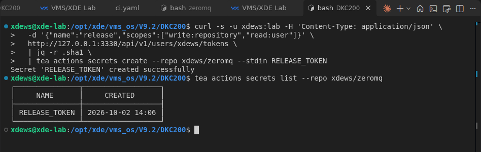
-
Add the release job at the end of
.gitea/workflows/ci.yaml, as in B3 how: B3 step 2 (Ctrl+End, paste, save):release: needs: [test, kit] if: startsWith(gitea.ref, 'refs/tags/v') runs-on: xde steps: - name: publish the kit run: | cd "$RUN_DIR" # VMS file names: match case-insensitively kit=$(find . -maxdepth 1 -iname '*.pcsi$compressed' | head -1) # own tea login, apart from yours (the runner runs as your user); # removed after the step, as it holds the token export XDG_CONFIG_HOME=$(mktemp -d) trap 'rm -rf "$XDG_CONFIG_HOME"' EXIT tea login add --name ci --url http://127.0.0.1:3330 \ --token "${{ secrets.RELEASE_TOKEN }}" >/dev/null tea releases create --login ci --repo ${{ gitea.repository }} \ --tag "${{ gitea.ref_name }}" --title "ZeroMQ ${{ gitea.ref_name }}" \ --asset "$kit"Part What it does needs: [test, kit]Publish only a kit whose code passed the tests. if: startsWith(gitea.ref, 'refs/tags/v')Only for version tags ( v…). A push tomasterand the manual QA run never publish anything.find … -iname '*.pcsi$compressed'The kit that kitbuilt in the run folder. OpenVMS file names come back in either case, so the match ignores case.XDG_CONFIG_HOME=$(mktemp -d),trapteakeeps its logins in its configuration folder. The runner runs as your user, so without this the job's login would land among your own. Thetrapremoves the temporary folder, and the token in it, when the step ends.${{ secrets.RELEASE_TOKEN }}The secret from step 1; in the log it shows as ***.tea releases create … --assetCreates the release for the tag and attaches the kit. 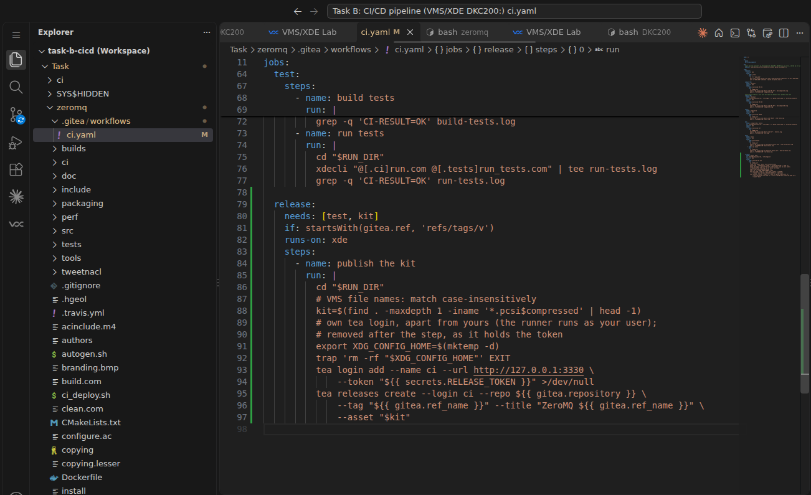
-
Commit and push, then tag the commit and push the tag. The push starts a normal run (release skipped); the tag starts the full run with the release. They run one after the other: the runner takes one job at a time.
cd /opt/xde/vms_os/V9.2/DKC200/zeromq git commit -am "Add the release job" git push git tag v4.1.8-ws1 git push origin v4.1.8-ws1
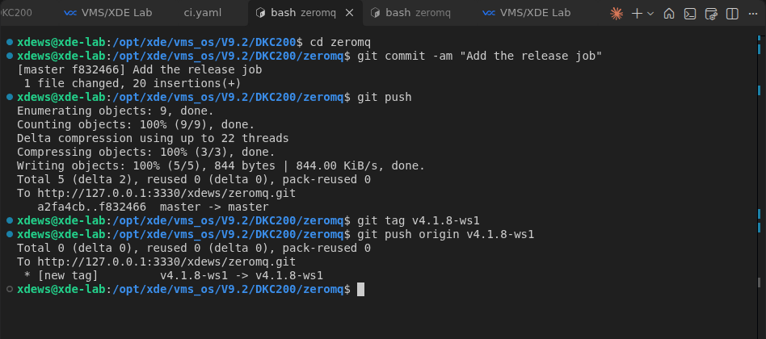
-
Both runs take about 3½ minutes together: about one for the push, two and a half for the tag. Then show the tag run (run 5):
tea actions runs view --repo xdews/zeromq 5
All seven jobs ran: for a tag, compile-64,kitandreleaseare no longer skipped.The complete pipeline: checkout → compile-32 / compile-64 → tools → test / kit → release. -
Check the release:
tea releases listshows it (-o simple: one line per release instead of a wide table),tea releases assets listits files, the PCSI kit.tea releases list --repo xdews/zeromq -o simple tea releases assets list --repo xdews/zeromq v4.1.8-ws1
In the Gitea tab, the repository's Releases page shows the release with the kit to download. how: Setup step 6
v4.1.8-ws1 has the PCSI kit attached.OPTIONALFinal · QA run
This part is optional: the pipeline is complete after B4. You start the pipeline by hand, without a push or a tag. Such a run is what a QA team or a nightly schedule uses: it builds everything, including the 64-bit libraries and the kit, and runs the tests, but it publishes nothing.
-
Start the run.
workflow_dispatchin the pipeline'son:list (since B2a) allows manual runs;tea actions workflows dispatchstarts one for a branch and prints its number, run 6.tea actions workflows dispatch --repo xdews/zeromq \ --ref master ci.yaml
Write the options in full: in this command
-rcould mean--refor--repo.The same run can be started in the Gitea tab: Actions → workflow ci → Run Workflow. Use one of the two, not both: each starts a run.
-
When it has finished (a little over 2 minutes), show it:
tea actions runs view --repo xdews/zeromq 6
Every job ran except release: the run is not for a tag.In the Gitea tab, open the run:
compile-64andkitare green this time,releaseis skipped. how: B2a step 5The QA run: on: workflow_dispatch, everything butrelease. -
The kit of this run stays in its run folder on the task disk,
DKC200:[ci.run_6]. Look at it from OpenVMS:xdecliruns one DCL command (single quotes keep bash from touching the$).xdecli 'directory/size/date DKC200:[ci.run_6]*.pcsi$compressed'
compile-64 and kit, release skipped, and the kit is in DKC200:[ci.run_6].